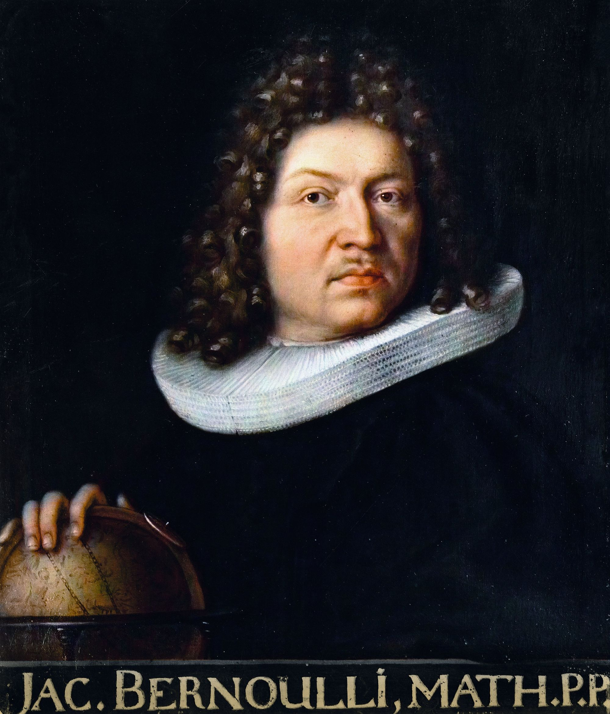

Jacob Bernoulli 1655–1705

Contexto. Su familia, de origen belga y protestante, huyó de la persecución española en los Países Bajos y se instaló en Basilea, donde el padre dirigía un negocio de especias.
Formación. Sus padres lo obligaron a estudiar filosofía y teología (maestría en 1671, licenciatura en 1676), algo que resintió. En paralelo estudiaba matemáticas y astronomía a escondidas. Fue el primero de la familia en tomar ese camino.
Trayectoria. Tutor en Ginebra, viajó por Francia, Países Bajos e Inglaterra, donde conoció a Boyle y Hooke. Desde 1683 enseñó mecánica en Basilea y en 1687 obtuvo la cátedra de matemáticas, que ocupó hasta su muerte. Con su hermano Johann fue de los primeros en entender y aplicar el cálculo de Leibniz, entonces muy oscuro para casi todos.